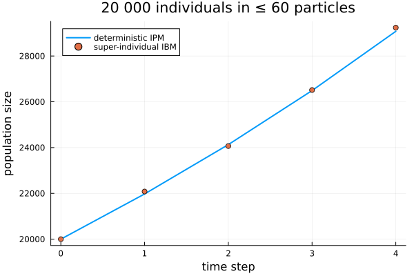
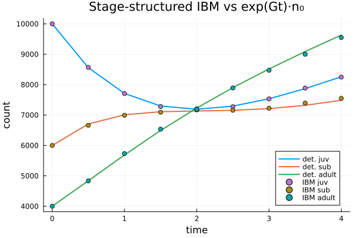

Super-individuals and stage structure
Two extensions of the basic IBM: super-individuals (represent a large real population with few weighted particles while keeping exact aggregate counts) and stage structure (an individual-based finite-state continuous-time Markov chain).
using IndividualBasedPopulationDynamics
using IntegralProjectionModels
using StructuredPopulationCore: meshpoints, step_size
using Random, Statistics, LinearAlgebra, PlotsSuper-individuals
A super-individual carries a Weight — the number of real individuals it represents at one trait. Demographic events use exact aggregate draws (Binomial(w, survival) survivors, Poisson(w · fecundity) recruits), so a sum over particles is distributionally identical to tracking every individual, with far fewer entities.
survival = LinearSurvival(1.0, 0.0)
growth = NormalGrowth(0.5, 0.8, 0.4)
fecundity = FecundityRate(-1.0, 0.0, 1.0, 0.3, 1.0)
domain = ContinuousDomain(0.0, 6.0, 60)
z = meshpoints(domain)
h = step_size(domain)
rng = Random.Xoshiro(31)
traits0 = clamp.(2.0 .+ 0.5 .* randn(rng, 20_000), 0.01, 5.99)
n0 = zeros(Int, length(z))
for zt in traits0
n0[clamp(floor(Int, (zt - domain.lower) / h) + 1, 1, length(z))] += 1
end
traits_s = [z[b] for b in 1:length(z) if n0[b] > 0]
weights_s = [n0[b] for b in 1:length(z) if n0[b] > 0]
world = ibm_world_super(survival, growth, fecundity, domain;
rng = rng, traits0 = traits_s, weights0 = weights_s)
(total = total_count(world), particles = n_particles(world))(total = 20000, particles = 39)So 20 000 individuals are carried by only ~60 particles, and the total tracks the deterministic IPM (merging back to the mesh each step to cap the particle count):
res = ibm_run_super!(world, 4; merge_domain = domain)
kernel = PKernel(survival, growth, domain) + FKernel(fecundity, domain)
detsol = solve(IPMProblem(kernel, domain, Float64.(n0), (0, 4)), DirectIteration())
det_total = [sum(u) for u in detsol.u]
plot(0:4, det_total; label = "deterministic IPM", lw = 2)
plot!(0:4, res.N; seriestype = :scatter, label = "super-individual IBM",
xlabel = "time step", ylabel = "population size",
title = "20 000 individuals in ≤ 60 particles")
Because Binomial and Poisson draws sum exactly, the whole count distribution matches — not just the mean. With $K = 200$ particles of weight $50$ ($N = 10\,000$), the one-step total has the analytic mean and variance of the full individual model:
sconst, fconst = survival(0.0), exp(-1.0)
totals = map(1:400) do r
w = ibm_world_super(survival, growth, fecundity, domain;
rng = Random.Xoshiro(1000 + r),
traits0 = fill(2.0, 200), weights0 = fill(50, 200))
ibm_step_super!(w)
total_count(w)
end
N = 10_000
(empirical = (mean(totals), var(totals)),
analytic = (N * (sconst + fconst), N * (sconst * (1 - sconst) + fconst)))(empirical = (10993.83, 5482.757994987469), analytic = (10989.38019801447, 5644.913744129241))Stage structure (pure-jump finite-state IBM)
Individuals can instead carry a discrete Stage and jump between stages. Rates are a transition matrix Qtrans[s', s] (rate $s \to s'$), a per-stage death vector, and a birth matrix birth[to, from]:
Qtrans = [0.0 0.0 0.0; # 1 -> 2 at 0.5, 2 -> 3 at 0.4 (juvenile -> sub-adult -> adult)
0.5 0.0 0.0;
0.0 0.4 0.0]
death = [0.1, 0.1, 0.2]
birth = zeros(3, 3); birth[1, 3] = 0.6 # adults (stage 3) produce stage-1 offspring
stages0 = vcat(fill(1, 10_000), fill(2, 6_000), fill(3, 4_000))
sworld = ibm_world_stage(Qtrans, death, birth; rng = Random.Xoshiro(40), stages0 = stages0)
sres = ibm_run_stage!(sworld, (0.0, 4.0); dt = 0.01, saveat = 0.5, n_stages = 3)
sres.counts[1]3-element Vector{Int64}:
10000
6000
4000The mean of this jump process is the finite-state generator $\dot n = G n$. The per-stage counts track $\exp(Gt)\,n_0$:
G = [-0.6 0.0 0.6;
0.5 -0.5 0.0;
0.0 0.4 -0.2]
n0_stage = Float64.([10_000, 6_000, 4_000])
ibm_counts = reduce(hcat, [Float64.(c) for c in sres.counts])'
det_counts = reduce(hcat, [exp(G .* t) * n0_stage for t in sres.t])'
plot(sres.t, det_counts; lw = 2, label = ["det. juv" "det. sub" "det. adult"])
plot!(sres.t, ibm_counts; seriestype = :scatter,
label = ["IBM juv" "IBM sub" "IBM adult"],
xlabel = "time", ylabel = "count",
title = "Stage-structured IBM vs exp(Gt)·n₀")